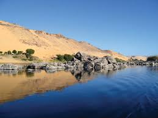
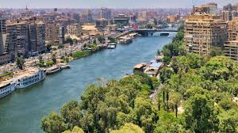
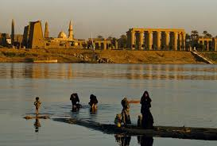
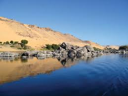
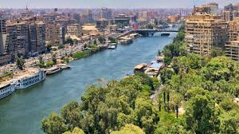
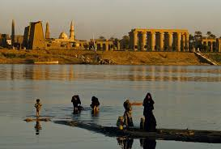

نهر النيل.. شريان الحياة في مصر
نهر النيل هو أطول أنهار العالم، وشريان الحياة لمصر منذ آلاف السنين. على ضفافه قامت الحضارة المصرية القديمة، وازدهرت الزراعة، والتجارة، والفنون. اليوم، ما زال النيل مصدرًا للجمال والهدوء والإلهام لكل من يعيش على أرض مصر.
 





الحياة على ضفاف النيل
منذ آلاف السنين، عاش المصريون على ضفاف النيل، فزرعوا أراضيه الخصبة وبنوا قراهم ومدنهم حوله. كانت فيضاناته السنوية تمنح الأرض خصوبة وغنى، حتى أصبح النيل رمزًا للحياة والرخاء.
النيل في الحضارة القديمة
عبد المصريون القدماء النيل باعتباره مصدر الخير، وسمّوه "إله الفيضان". أقاموا له الاحتفالات، ونقشوا على جدران المعابد مشاهد تقديم القرابين للنيل.
النيل اليوم
اليوم، يظل نهر النيل القلب النابض لمصر الحديثة. على ضفافه تمتد المدن الكبرى، وتُقام المشاريع القومية، وتستمر رحلات السياحة والمراكب الشراعية التي تسحر أنظار العالم.
رجوع إلى الصفحة الرئيسية"من يشرب من ماء النيل، لابد أن يعود إليه مرة أخرى."
— مثل مصري قديم